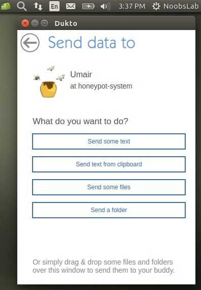

| description: A simple, fast and multi-platform file transfer tool for LAN users. url: http://www.msec.it/dukto license: 'GPL v2' depends: qt created_at: Monday Dec 29, 2014 at 01:53 pushed_at: Monday Dec 29, 2014 at 01:54 |  |
| Searching or getting the needed files from KaOS Community Packages has been simplified with the addition of the package “kcp”. You can click the button to copy the required command kcp and paste it into your console. | Copy command |
| Click the just downloaded package zip and extract file to your build folder. The call to start to build and install the needed dependencies is makepkg -si. | Download ZIP |